Los jugadores del Espanyol aseguraron hoy que prefieren enfrentarse al Barcelona en la final de la Copa del Rey en lugar de en las semifinales , tras clasificarse ayer ambos equipos catalanes para esta ronda.

La mayoría de los jugadores españolistas expresaron su opinión de que sería más fácil vencer a su máximo rival en un solo partido que tener que enfrentarse al conjunto de Louis Van Gaal en las semifinales , donde tendrían que disputar una eliminatoria de ida y vuelta.

" Está claro que prefiero al Barcelona en la final , porque a dos partidos es más complicado ganarles " , declaró el delantero paraguayo Miguel Angel Benítez , quien espera que en las semifinales el Espanyol quede emparejado con " el Atlético de Madrid o el Mérida , si pasa esta noche ( para lo que tiene que eliminar al Real Madrid ) ".
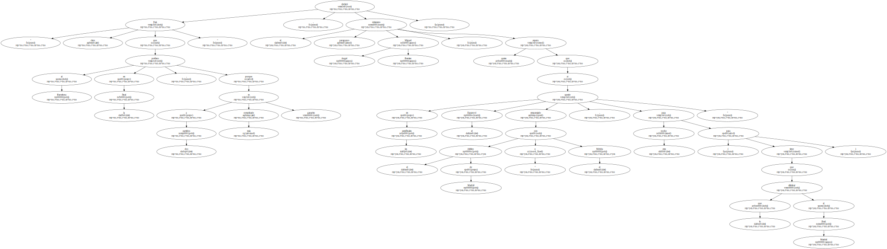El jugador paraguayo cree que el hecho de que las semifinales no se disputen hasta el mes de abril va a venir muy bien a su equipo , " porque ahora estamos jugando muchos partidos seguidos y así llegaremos más descansados que nuestros posibles rivales , que por esas fechas estarán jugando competiciones europeas " , indicó.
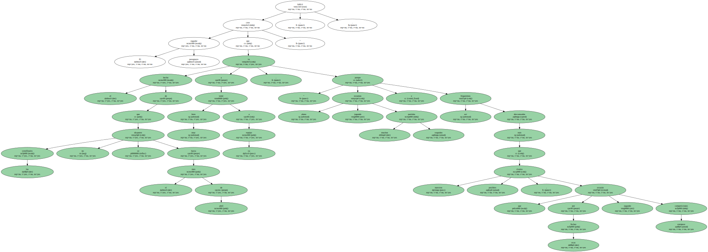Otros jugadores , como el centrocampista Moisés García 'Arteaga' , tampoco quieren al Barcelona en semifinales.
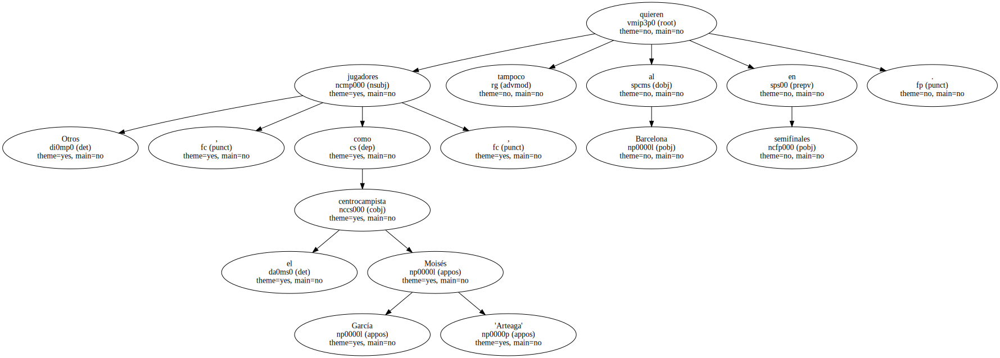" Si pasa el Mérida , el Mérida , y si no el Atlético de Madrid o el Real Madrid , porque si nos toca el Barcelona , pasar va a ser muy difícil " , aseguró el capitán del Espanyol.
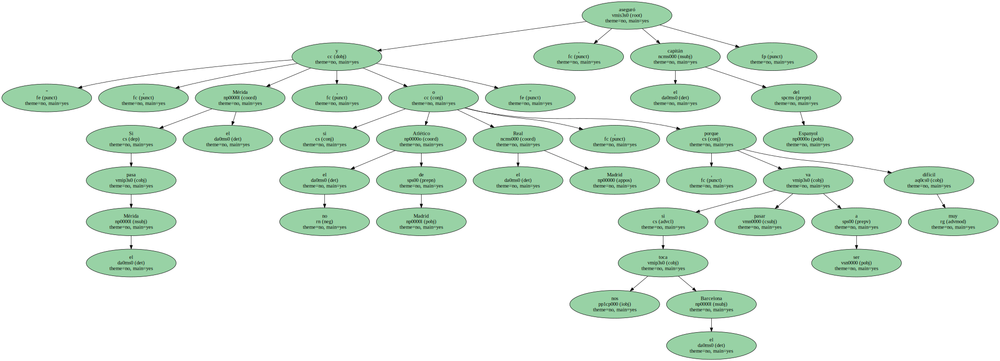Arteaga cree que el descanso copero va a ir muy bien para el equipo , " pues va a ser mejor para afrontar la Liga y las semifinales de Copa " , pero negó que esto sea una ventaja respecto a equipos como el Real Madrid o el Barcelona , inmersos por esas fechas en plena lucha por seguir adelante en la Liga de Campeones.
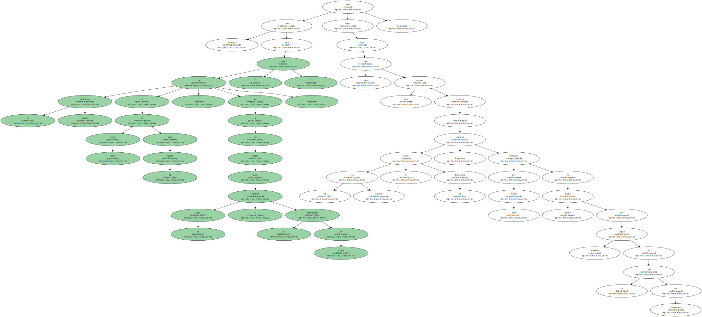" Ellos tienen unas plantillas más amplias y con más calidad que la nuestra " , advirtió Arteaga , mientras que su compañero Mauricio Pochettino , quien también prefiere al Barcelona en la final , coincidió con el centrocampista gaditano en que estos equipos " tienen plantillas extensísimas para afrontar todas las competiciones ".
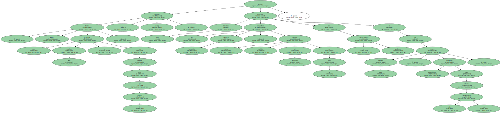Más gráfico que sus compañeros fue el defensa Toni Soldevilla , quien ya sueña con una final entre los dos equipos de la Ciudad Condal.
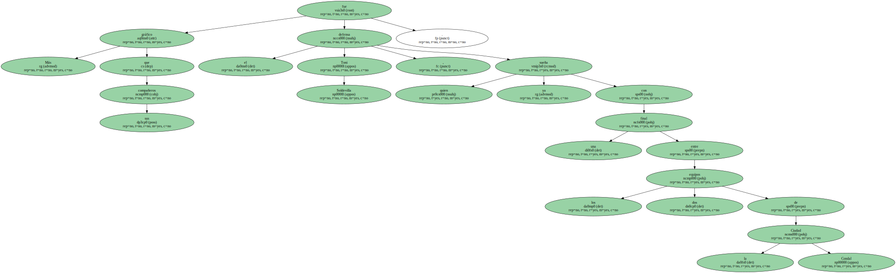" Sería bonito jugar la final contra el Barcelona . ¿ Un derbi y además en la final de la Copa del Rey ? ¡ Sería de puta madre ! " , exclamó el defensa canterano.
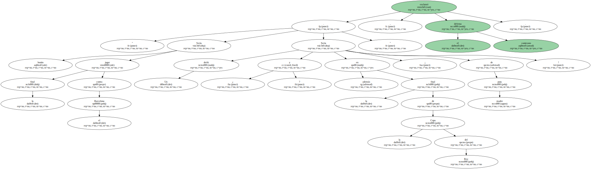Menos tajantes que el resto fueron los delanteros Raúl Tamudo y Martín Posse , quienes consideran que la importancia del rival es relativa.
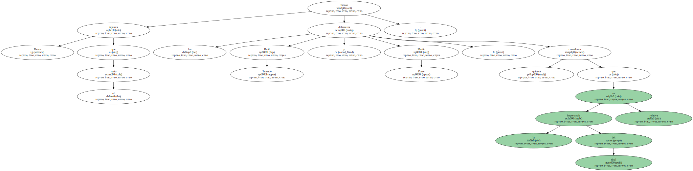A Tamudo le gustaría enfrentarse al Mérida si elimina al Real Madrid esta noche y prefiere al Barcelona o al Real Madrid en la final.
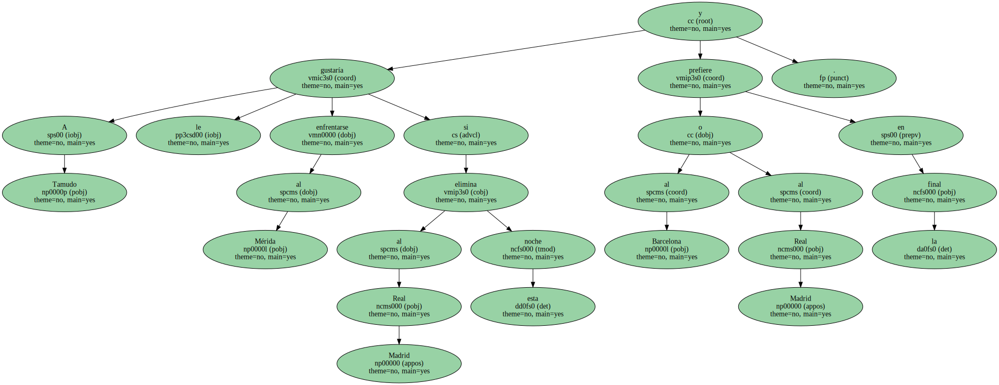" Si nos tocan en " semis " tampoco pasa nada , porque a estas alturas cualquiera de ellos son buenos equipos y habrá que salir a por todas " , advirtió.
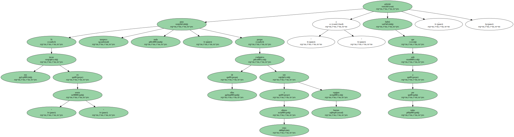Posse , por su parte , también cree que si el equipo quiere ser campeón " debe ganar a cualquiera " , por lo que no tiene preferencia por ninguno.
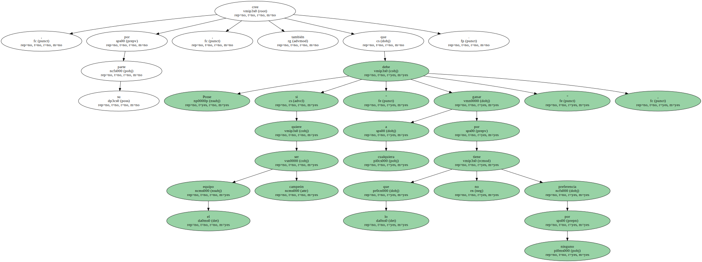" Ya sólo quedan cuatro y el pasar se hace mucho más competitivo , así que da igual el que toque " , aseguró.
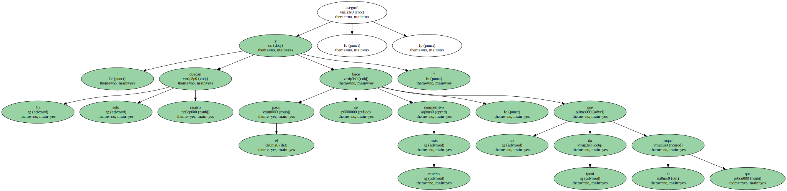